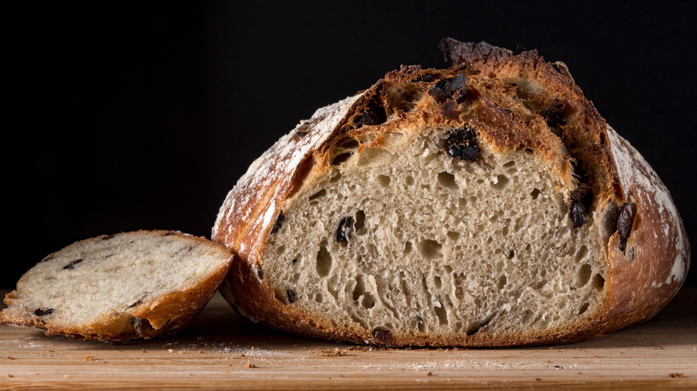

L'habitude qui va changer votre vie... et celle de vos proches

Prendre la décision de me former, et de changer mon rythme quotidien a été la meilleure des choses que j'ai fait pour moi-même !
Alicia, Mai 2019
Formation de tout cœur
Chaque jour sera un jour de création. Dès que l'eau pure rencontre la farine, dès que le levain, bien vivant, vient agir dans la matière, la magie du pain opère !
Le reste de la journée vous appartient !
Et la vie continue !

Grâce à la formation Bread&Heart, j'ai mis de la joie dans mon quotidien. Les gens viennent naturellement à moi, et j'ai le plaisir de partager mon pain, mais également de former les autres.
Simon, Juin 2018